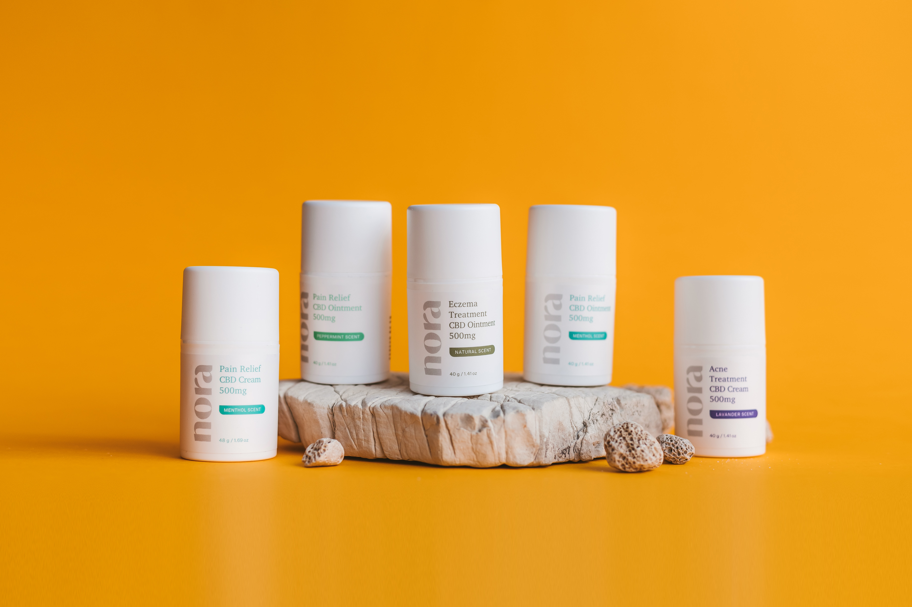

Proteja sua pele com SunGuard
O protetor solar SunGuard oferece proteção solar de longa duração, permitindo que você aproveite seu dia ao ar livre sem se preocupar com a queimadura solar. Nossa fórmula exclusiva é formulada com ingredientes naturais cuidadosamente selecionados para proteger e nutrir a pele, sem a adição de substâncias químicas nocivas como parabenos, óleos minerais ou fragrâncias artificiais.
O SunGuard é resistente à água e ao suor, ideal para a prática de atividades físicas ao ar livre ou para dias de praia e piscina. Com FPS 50, você pode ter certeza de que sua pele está protegida dos raios UVA e UVB.
Benefícios
- Proteção solar de longa duração
- Ingredientes naturais
- Livre de substâncias químicas nocivas
- Resistente à água e ao suor
- FPS 50 para proteção UVA e UVB
Modo de usar
Aplique o protetor solar SunGuard uniformemente sobre a pele limpa e seca, pelo menos 15 minutos antes da exposição ao sol. Reaplique a cada duas horas ou após nadar ou suar intensamente.